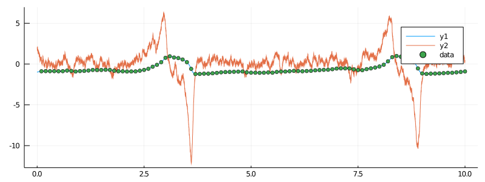
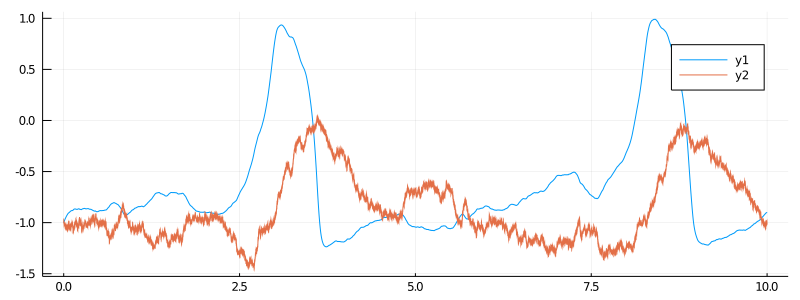
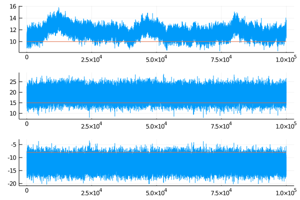

Conjugate updates for the FitzHugh–Nagumo model
In this tutorial we will do parameter inference for the partially observed hypoelliptic version of the FitzHugh–Nagumo model using conjugate Gaussian updates.
Reparameterization
The ordinarily parameterized FitzHugh–Nagumo model:
is not ideal for conjugate updates, as parameter $ϵ$ cannot be updated with this method. However, it is possible to slightly reparameterize the model so that three parameters: $(ϵ,s,γ)$ can be updated at once. The reparameterized model is given by the following SDE:
and can be loaded in with
using DiffusionDefinition
@load_diffusion FitzHughNagumoConjugFor more information about the reparameterization see this page.
Preparation
Before we can start doing any inference we should perform the same preparatory steps as we did in the previous tutorial. Thus, before proceeding any further make sure that you've loaded the libraries and simulated the data. Note that the data can be simulated as before:
using DiffusionDefinition
const DD = DiffusionDefinition
@load_diffusion FitzHughNagumo
θ = [0.1, -0.8, 1.5, 0.0, 0.3]
P = FitzHughNagumo(θ...)i.e. using the original parameterization, or equivalently, using the new one:
@load_diffusion FitzHughNagumoConjug
θ = [10.0, -8.0, 15.0, 0.0, 3.0]Just make sure you transform the starting point accordingly via:
so that the old point
becomes
Below, we summarize the steps of loading in the libraries, simulating the data and preparing the observations. Note that this time, because we will want to deal with a harder problem of simultaneous estimation of three parameters we will make our lives a little easier and decrease the standard deviation of the noise on the observations by one order of magnitude.
# load in all relevant libraries
using DiffusionMCMC, ExtensibleMCMC, GuidedProposals
using DiffusionDefinition, ObservationSchemes
const DD = DiffusionDefinition
const eMCMC = ExtensibleMCMC
using StaticArrays, Plots
using OrderedCollections, GaussianDistributions
@load_diffusion FitzHughNagumoConjug
# generate some data
θ = [10.0, -8.0, 15.0, 0.0, 3.0]
P = FitzHughNagumoConjug(θ...)
tt, y1 = 0.0:0.0001:10.0, @SVector [-1.0, 2.0]
X = rand(P, tt, y1)
data = map(
x->(x[1], x[2][1] + 0.01randn()),
collect(zip(X.t, X.x))[1:1000:end]
)[2:end]
# and let's see how they look
plot(X, Val(:vs_time), size=(800, 300))
scatter!(getindex.(data, 1), getindex.(data, 2), label="data")
The plot above is not very transparent as the ranges of coordinates are not really compatible for displaying on the same plot. One way to deal with this (which has an additional benefit of being more comparable to our previous tutorial) is to transform the second coordinate back to the original parameterization and plot that:
plot(X.t, getindex.(X.x, 1), size=(800, 300))
x_old = -1.0/P.ϵ .* getindex.(X.x, 2) .+ getindex.(X.x, 1) .- getindex.(X.x, 1) .^ 3 .+ P.s/P.ϵ
plot!(X.t, x_old)
# finally, prepare the data
recording = (
P = P,
obs = load_data(
ObsScheme(
LinearGsnObs(
0.0, (@SVector [0.0]);
L=(@SMatrix [1.0 0.0]), Σ=(@SMatrix [1e-4])
)
),
data
),
t0 = 0.0,
x0_prior = KnownStartingPt(y1),
)
observs = AllObservations()
add_recording!(observs, recording)
init_obs, _ = initialize(observs)Inference
@load_diffusion FitzHughNagumoConjugAuxSimple
DD.const_parameter_names(::Type{<:FitzHughNagumoConjug}) = (:β, :σ)
DD.const_parameter_names(::Type{<:FitzHughNagumoConjugAuxSimple}) = (:σ, :t0, :T, :vT, :xT)
# and do the inference
mcmc_params = (
mcmc = MCMC(
[
PathImputation(
0.99, FitzHughNagumoConjugAuxSimple;
adpt=AdaptationPathImputation(;
adapt_every_k_steps = 50,
scale = 0.05,
),
),
DiffusionConjugGsnUpdate(
[1,2,3],
Gaussian(
(@SVector [0.0, 0.0, 0.0]),
SDiagonal(1e4, 1e4, 1e4),
),
)
];
backend=DiffusionMCMCBackend(),
),
num_mcmc_steps = Integer(1e5),
data = initialize(observs)[1],
θ_init = OrderedDict(
:REC1_ϵ => 10.0 , # param 1
:REC1_γ => 15.0 , # param 2
:REC1_s => -8.0 , # param 3
),
)
mcmc_kwargs = (
path_buffer_size = 10,
dt = 0.001,
)# run the MCMC
@time ws = run!(mcmc_params...; mcmc_kwargs...)It takes about 1min 30sec to run on my laptop.
# inspect the results
θθ = [map(x->x[2][i], ws[1].sub_ws.state_history) for i in 1:3]
plot(θθ, layout=(3,1))
plot!([[0,1e5], [0,1e5], [0,1e5]], [[10, 10], [15, 15], [-8,-8]])